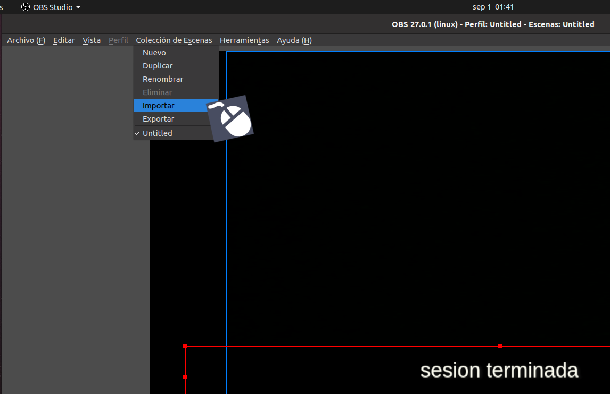
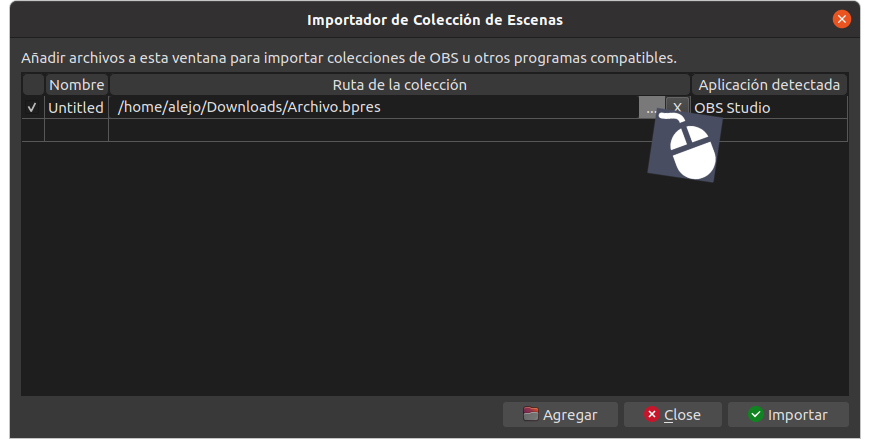
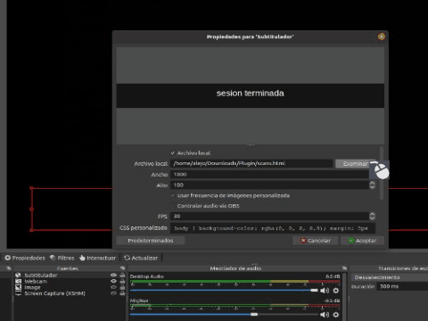
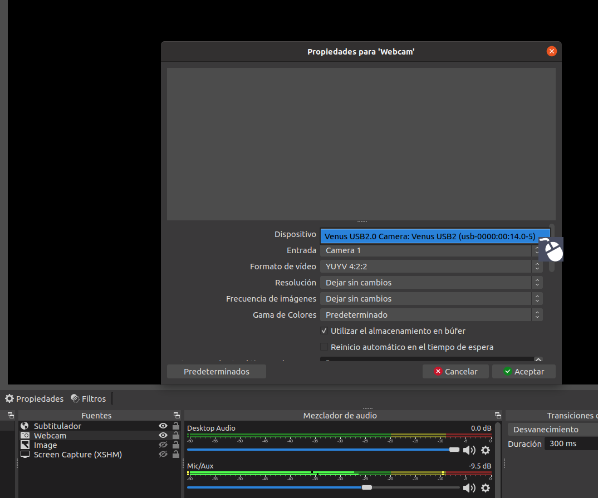
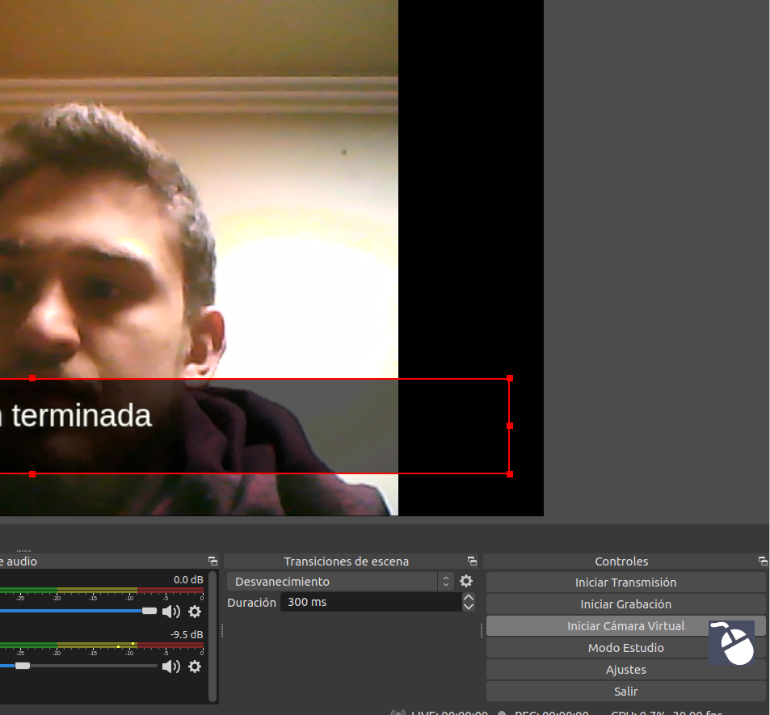

Proceso a realizar sobre la herramienta OBS
Una vez abierto OBS procedemos a realizar los siguientes pasos:
Importar la escena
En el menú superior buscamos la opción "Colección de escenas" o presionamos "alt+s". Damos click en el botón que indica "Importar"

Cargamos el archivo
Entre los archivos descargados existe el archivo "escena_subtitulado" que generará y organizará automáticamente los componentes necesarios para la implementacióń. Utilizando el navegador de archivos de OBS encontraremos este archivo y presionaremos el botón de "Importar"

Cargamos el resultado del plugin
Damos click derecho en el componente "Subtitulador" y entramos a propiedades. El plugin realizado escribe los resultados en un archivo formato ".html" el cual es compatible con la herramienta OBS y que con la importación del archivo anterior ya tenemos, unicamente tendremos que modificar el enlace por la ruta en la que se encuentra el archivo "scans.html". Una vez cargado esto procedemos a guardar y actualizar el componente

Iniciar captura de video
Para completar la configuración sobre la herramienta OBS debemos encontrar el compontente llamado "Webcam", darle click derecho y entrar a sus propiedades. En el primer parámetro tenemos la opción para seleccionar el dispositivo, y pondremos la cámara que tengamos disponible

Cámara Virtual
Una vez tengamos la imagen en pantalla tal y como queremos procedemos a crear la cámara virtual para su posterior implementación en plataformas de videoconferencia. Entonces para la activación de la cámara virtual debemos encontrar el panel de controles en la parte inferior derecha, ahí tendremos la opción de "Iniciar Cámara Virtual". Nos pedirá permisos para su creación.
